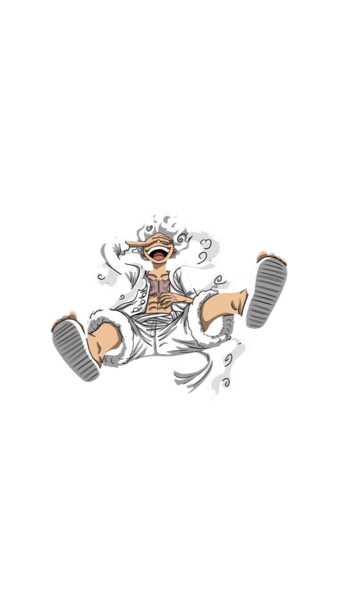
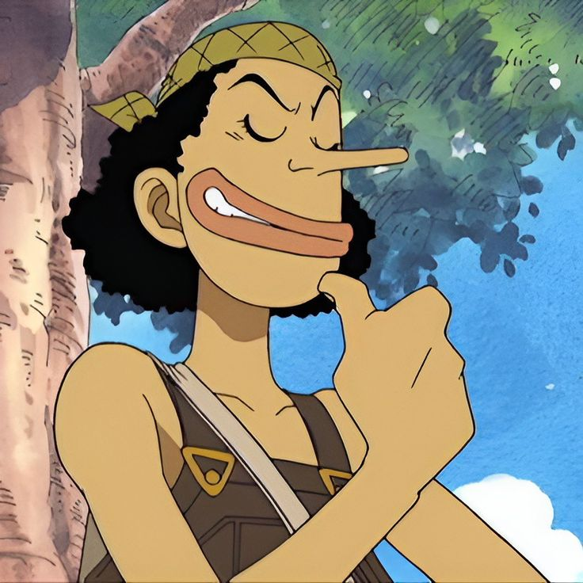
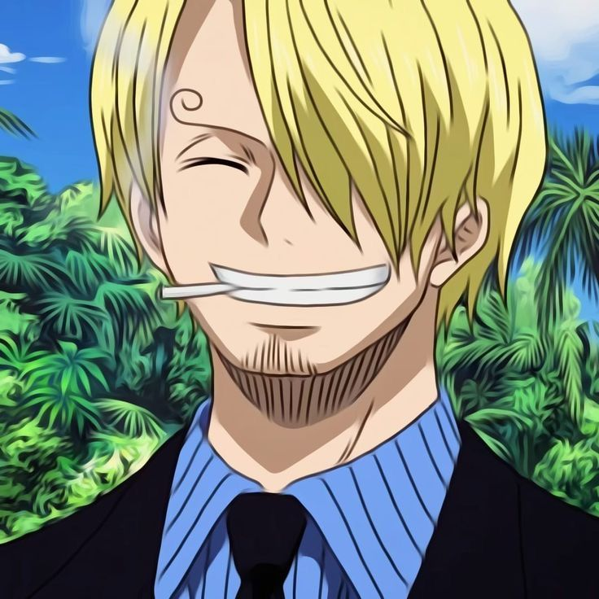
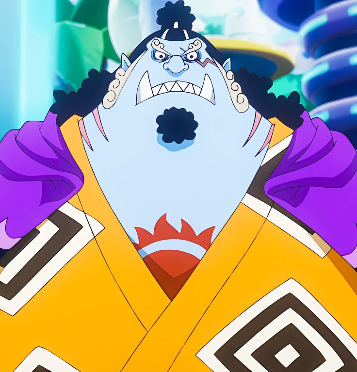
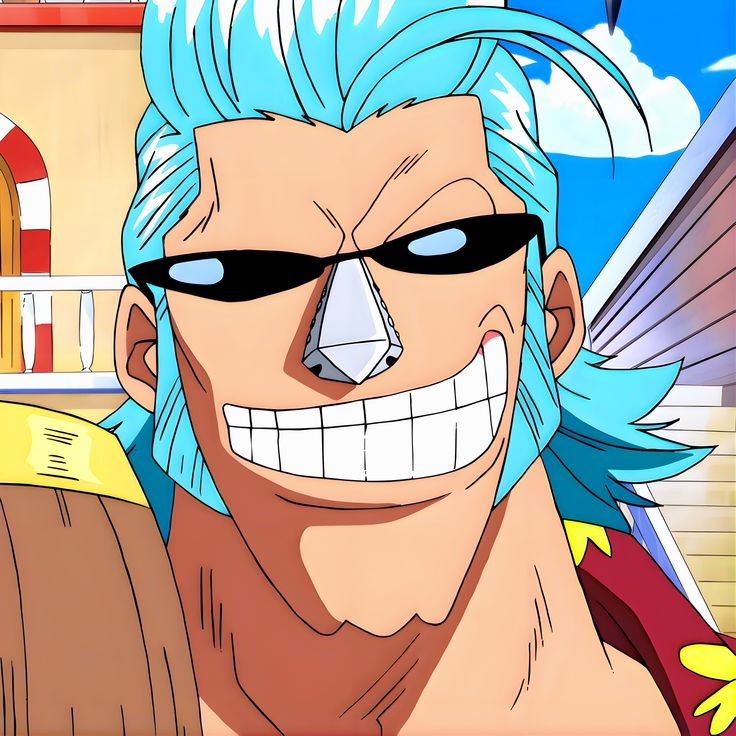
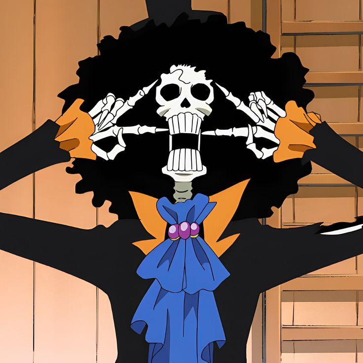

Monkey D. Luffy
Capitão dos Chapéus de Palha e futuro Rei dos Piratas! Lutador destemido com poderes da Fruta do Diabo.

Habilidades do Luffy
🍇 Akuma no Mi (Fruta do Diabo - Gomu Gomu)
Descrição: Transforma o corpo em borracha, concedendo elasticidade extrema e resistência a impacto.
- Flexibilidade Total: Pode esticar qualquer parte do corpo
- Resistência a Impactos: Amortiza danos físicos
- Sem Ponto Fraco: Imune a ataques não-físicos e haki
- Velocidade Aumentada: Permite propulsão rápida
⚙️ Gears (Técnicas Especiais)
Transformações Poderosas:
- Gear 2: Aumenta circulação sanguínea, multiplicando força e velocidade
- Gear 3: Sopra ar nos ossos, gigantismo temporário
- Gear 4: Usa haki de armamento para inflacionar músculos - Tankman, Snakeman e Boundman
- Gear 5: Despertar da Fruta - forma próxima ao estado de Deus, flexibilidade e força ilimitada
🌊 Haki (Poder Místico)
Três Tipos de Haki Dominados:
- Haki da Observação: Percepção aguçada, pode sentir e prever movimentos
- Haki do Armamento: Cria escudo de energia defensiva, permite atingir inimigos especiais
- Haki do Rei: Poder esmagador que domina vontades fracas, pode derrotar múltiplos inimigos
- Forma Avançada: Pode danificar internamente inimigos usando haki do armamento
👊 Técnicas Especiais de Combate
Ataques Iconográficos:
- Gomu Gomu no Pistol: Ataque reto com punho elasticizado
- Gomu Gomu no Gatling: Múltiplos socos rápidos
- Elephant Gun: Golpe giratório com força gigante
- King Kong Gun: Golpe supremo que combina Gear 4 e força máxima
- Bajrang Gun: Ataque final com Gear 5, força destrutiva imensa
Tripulação do Chapéu de Palha

Luffy
Capitão

Roronoa Zoro
Espadachim

Nami
Navegadora

Ussop
Atirador

Sanji
Cozinheiro

Tony Tony Chopper
Médico

Nico Robin
Arqueóloga

Jinbe
Timoneiro

Franky
Carpinteiro

Brook
Músico
Galeria